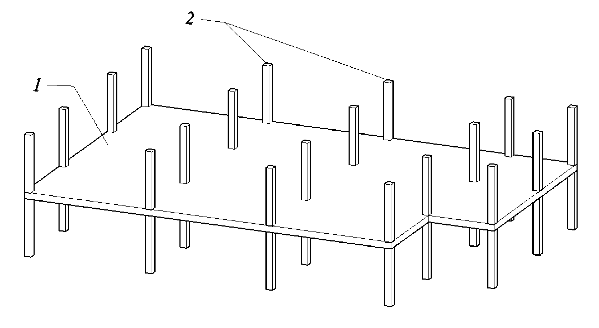
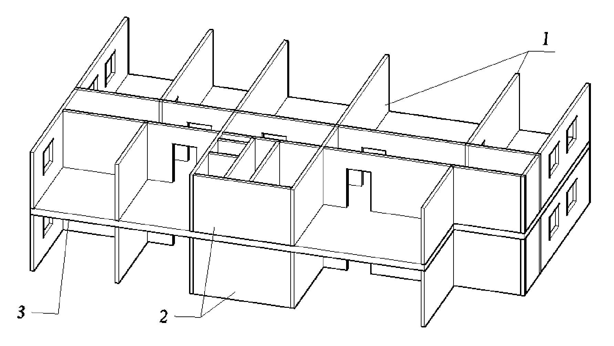
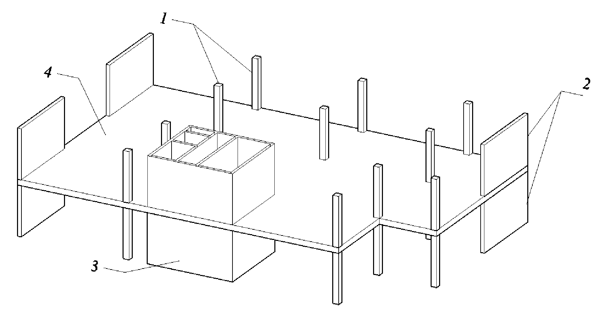
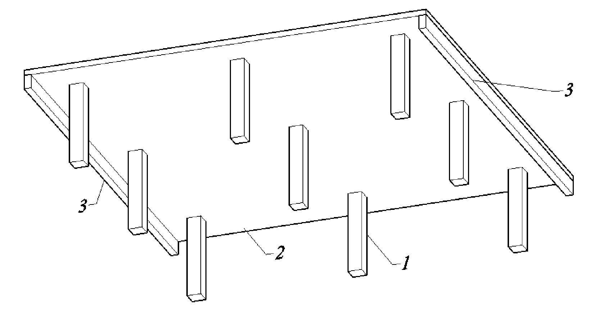
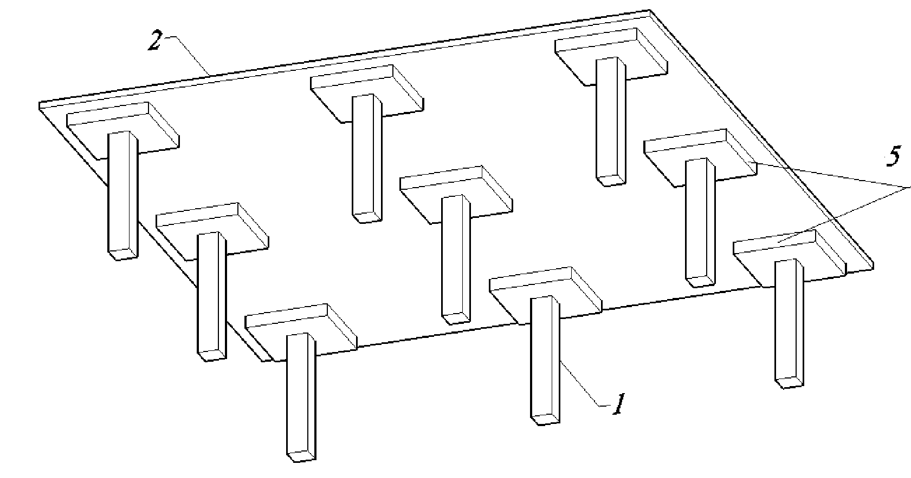
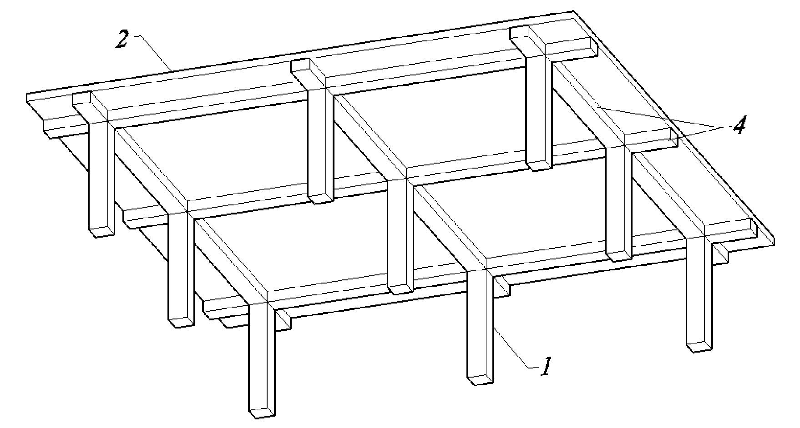
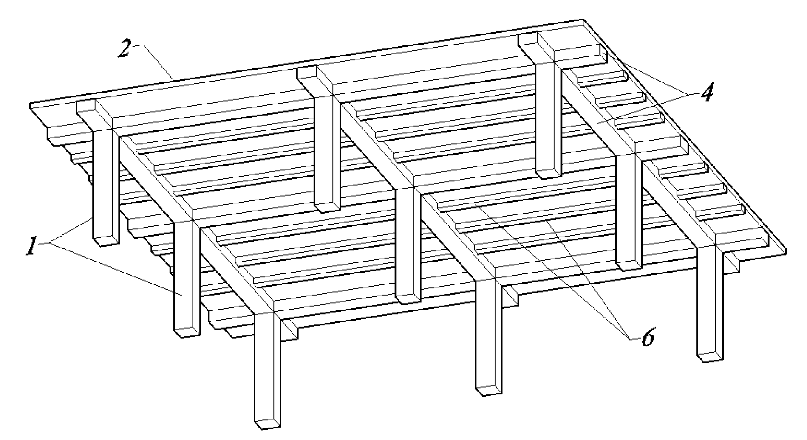
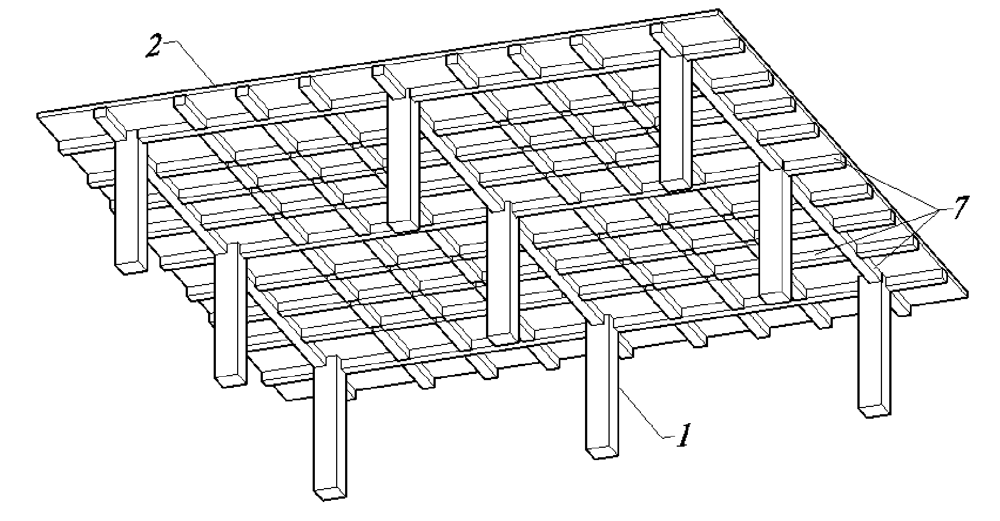

2 Координация, моделирование горизонтальных несущих конструкций
План занятия
0:00:00 – Структура файлов информационной модели здания
0:01:36 – Обзор проектируемого объекта
0:03:05 – Структура папок
0:05:18 – Создание разбивочного файла
0:10:35 – Моделирование уровней
0:13:33 – Моделирование осей
0:29:21 – Создание файла раздела КР, импорт связанного файла
0:34:09 – Копирование и мониторинг осей и уровней
0:42:40 – Создание планов несущих конструкций
0:45:30 – Моделирование фундаментной плиты
0:55:31 – Моделирование плит перекрытий
1:14:40 – Моделирование плит покрытия
1:23:05 – Моделирование отверстий
Теоретический блок
Структура файлов
Скачайте ⇲ материалы курса и разместите их внутри своей папки. Создайте внутри структуру папок согласно следующей схеме:
Группа_ФамилияИО/
├── Литература/
├── Проект/
│ ├── 01_Входящее/
│ ├── 02_Разработка/
│ │ ├── 00_Base/
│ │ ├── 01_AxesAndLevels/
│ │ │ └── School-9_AxesAndLevels_RVT2019.rvt
│ │ ├── AR/
│ │ └── KR/
│ │ └── School-9_KR_RVT2019.rvt
│ └── 03_Исходящее/
└── РевитШаблоны/
├── ADSK_RU_ШаблонПроекта_АР_r2019_v1.2.1.rte
└── ADSK_RU_ШаблонПроекта_КЖ_r2019_v1.2.1.rteКонструктивные системы



Конструктивные системы монолитных железобетонных зданий и сооружений описаны в разделе 5.1 ⇲ СП 430.1325800.2018.
В зависимости от типа вертикальных несущих элементов (колонн, пилонов и стен) различают следующие монолитные конструктивные системы:
- Каркасная – колонны или пилоны
- Стеновая – стены
- Каркасно-стеновая (смешанная) – колонны, пилоны и стены
- Комбинированная – несколько конструктивных систем в здании
По способу сопротивления горизонтальным нагрузкам различают схемы:
- Связевая – работа вертикальных несущих элементов (стен, ядер жесткости) как консолей, защемленных в фундаменте
- Рамная – работа рам, образуемых колоннами, пилонами и ригелями (условными ригелями), с жесткими узлами сопряжения
- Рамно-связевая – совместная работа связей (стен, ядер жесткости) и рам, образуемых колоннами и ригелями (условными ригелями), с жесткими узлами сопряжения
Типы и основные конструктивные параметры плоских фундаментных плит
Типы фундаментов из монолитного железобетона описаны в п. 5.1.7 ⇲ СП 430.1325800.2018.
Для зданий (сооружений) применяют различные типы фундаментов из монолитного железобетона:
- отдельные (столбчатые)
- ленточные
- плитные
- свайные
- свайно-плитные (комбинированные)
- ребристые
- коробчатые и пр.
Основные конструктивные параметры плоских фундаментных плит описаны в п. 5.2.7 ⇲ СП 430.1325800.2018.
| Толщина | Класс по прочности | Продольное армирование | Марка по водонепроницаемости |
|---|---|---|---|
| 0,5 м ≤ t ≤ 3,0 м | не менее В20 | не менее 0,3% | не менее W6 |
В первом приближении допускается толщину плоской фундаментной плиты на естественном основании назначать равной 1/65 ÷ 1/50 hзд, где hзд – строительная высота здания (сооружения), равная расстоянию от верха фундамента до срединной плоскости плиты покрытия.
Типы и основные конструктивные параметры плит перекрытий





Типы плит перекрытий из монолитного железобетона описаны в п. 5.1.10 ⇲ СП 430.1325800.2018
К плитам относят элементы, с соотношениями размеров а > 5t, (а – наименьший размер рядовой ячейки плиты в плане, t – толщина плиты). К балкам относят элементы, с соотношением размеров l > 3h (l – размер пролета балки, h – высота элемента. В противном случае такие балки относят к балкам-стенкам (или к высоким балкам).
Конструкцию безбалочных перекрытий принимают в виде:
- плит плоских (в том числе с контурными балками по свободным краям перекрытия)
- плит с капителями
Конструкцию балочных перекрытий принимают в виде:
- плит с балками (в одном или нескольких перекрестных направлениях)
- плит ребристых (с главными и второстепенными балками)
- плит кессонных
Ширину балок принимают преимущественно не более габаритного размера колонны и пилона, высоту балок – не менее толщины плитной части перекрытий.
Допускается для размещения инженерных сетей и звукоизоляции, устройства гладких потолков и т.п. принимать размещение балок в перекрытиях ребрами вверх. Конструкции балочных перекрытий с частым шагом балок (кессонные) следует применять преимущественно в регулярных конструктивных системах.
Основные конструктивные параметры плит перекрытий описаны в п. 5.2.14 ⇲ СП 430.1325800.2018.
| Тип плиты | Толщина | Класс по прочности |
|---|---|---|
| Плоская | 160 мм ≤ t | не менее В20 |
| Ребристая и кесонная | 250 мм ≤ t ≤ 500 мм | не менее В25 |
В первом приближении толщину плоских плит перекрытия в каркасных и смешанных конструктивных системах рекомендуется назначать не менее l/30, в стеновых конструктивных системах - не менее l/35, где l – длина наибольшего пролета плиты.
Вопросы для самоконтроля
- Создана структура папок проекта?
- Создан разбивочный файл School-9_AxesAndLevels_RVT2019 с уровнями и осями?
- Создан файл раздела КР School-9_KR_RVT2019?
- Уровни и оси скопированы и мониторятся из разбивочного файла?
- Смоделированы фундаментная плита и плиты перекрытия и покрытия?
- Есть понимание, как назначать толщину плит согласно рекомендациям СП 430.1325800.2018?